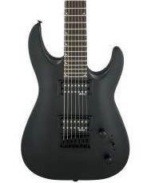
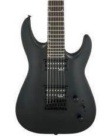

Guitarra electrica acabado gris
 

La guitarra eléctrica de estudio profesional con acabado gris es la elección perfecta para músicos que buscan un instrumento que combine elegancia y rendimiento superior. Su diseño sofisticado y características avanzadas garantizan una experiencia de interpretación inigualable.
- Cuerpo de madera sólida con un elegante acabado en gris mate
- Pastillas humbucker de alta salida para un tono potente y articulado
- Mástil de caoba con diapasón de ébano, proporcionando una comodidad y respuesta excepcionales
- Puente fijo de alta calidad que asegura una estabilidad de afinación óptima
- Selector de 5 posiciones para una flexibilidad tonal que abarca desde los agudos brillantes hasta los graves profundos